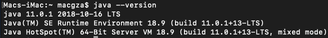
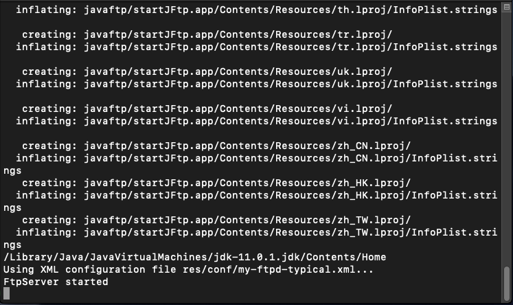
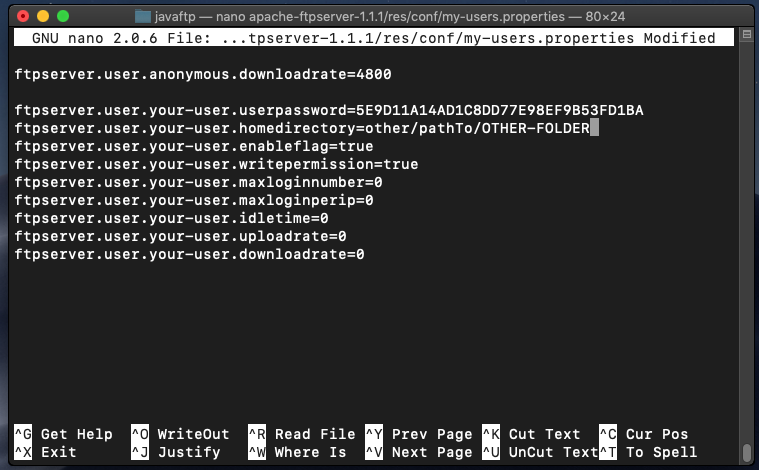
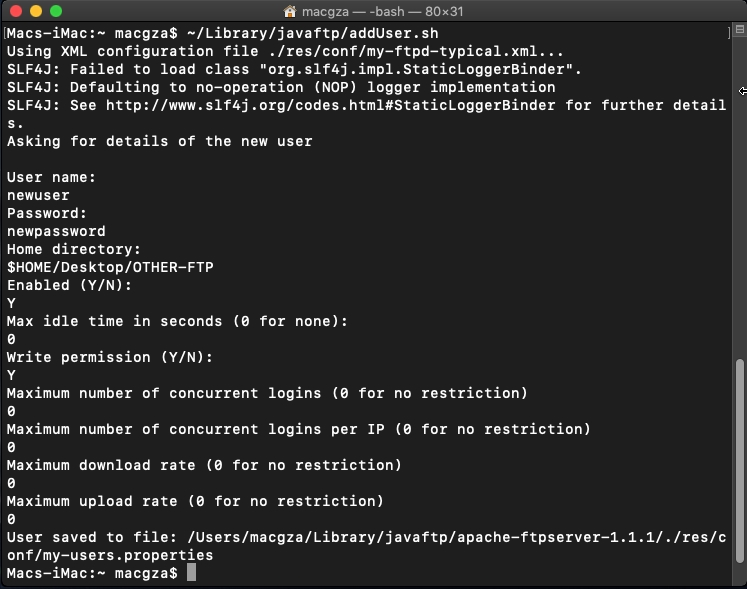
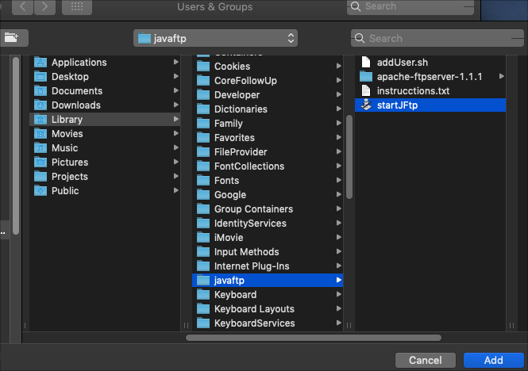
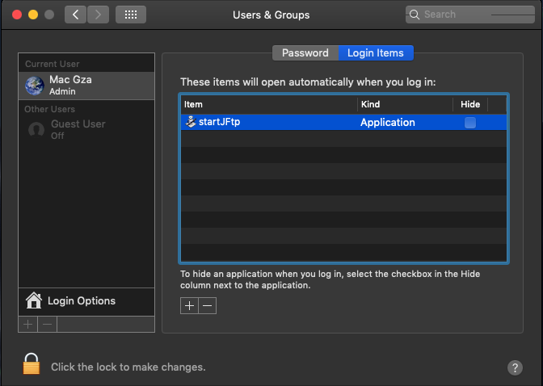

The latest versions of Mac OS X have removed their FTP functionality, so we are going to config a Java FTP Server to make available this feature again.
Requirements:
- Java
- Apache Ftp Server
Procedure:
To verify if Java is available, open a Terminal and Type:
java --version
If Java is not available, pops up a message that offers to visit the Java download website. You must download the jdk-XX-X-X_osx-x64_bin.dmg, install it and try the command again. You should see the Java version that you installed.
Now, we need to download this zip package - javaftp.zip - that contains the FTP server with pre-configured files.
The next command uncompresses the package, moves the javaftp
folder to the {your-user}/Library folder, adds execution
permissions and finally runs the Java FTP Server for the first time.
Copy the command to the Terminal:
cd ~/Downloads && unzip javaftp.zip && mv javaftp ~/Library && chmod 744 ~/Library/javaftp/apache-ftpserver-1.1.1/bin/ftpd.sh && chmod 744 ~/Library/javaftp/addUser.sh && mkdir ~/Desktop/JAVA-FTP && cd ~/Library/javaftp/apache-ftpserver-1.1.1 && bin/ftpd.sh res/conf/my-ftpd-typical.xml
You will see the message "FtpServer started".
Note: If something went wrong you can use the next command to find out the problem.
open /Applications/Utilities/Console.app ~/Library/javaftp/apache-ftpserver-1.1.1/res/log/ftpd.log
Try to connect with an FTP client like Filezilla.
The pre-configurated connection data are:
- User: javaftp
- Password: javaftp
- Port: 21
- Encryption: Plain FTP (See the Note below!)
- Home Folder: /Users/{your-user}/Desktop/FTP-JAVA
Note: Using Plain FTP it's a VERY HIGH RISK!!! You should only use it for tests purposes, and configure the FTP encryption for production environments. For more information about how to config the Apache FTP Server in a more secure way, see the sections Listeners and TLS-SSL Support, at the project documentation.
You can change the user, password and the home folder through the next command:
nano ~/Library/javaftp/apache-ftpserver-1.1.1/res/conf/my-users.properties
Change the "ftpuser" username to your-user-name, and your desired Home Folder path. The password needs to be an MD5 hash, you can generate this hash on any online generator.
Also, you can add new users with the command:
~/Library/javaftp/addUser.sh

In the folder ~/Library/javaftp, there is an app created with
Automator called startJFtp.app, this app contains the command
to start the FTP Server.
You only need to set up the app to be called when init your session. To do this: open System Preferences, then Users & Groups, and there select your user; in the Login Items tab, add the startJFtp.app which you will find it in your-user folder, then Library (Don't see the Library?) and finally the javaftp folder, add the app.
If you want check hide and it will run silently. Reboot, and now your FTP Server starts on login.
